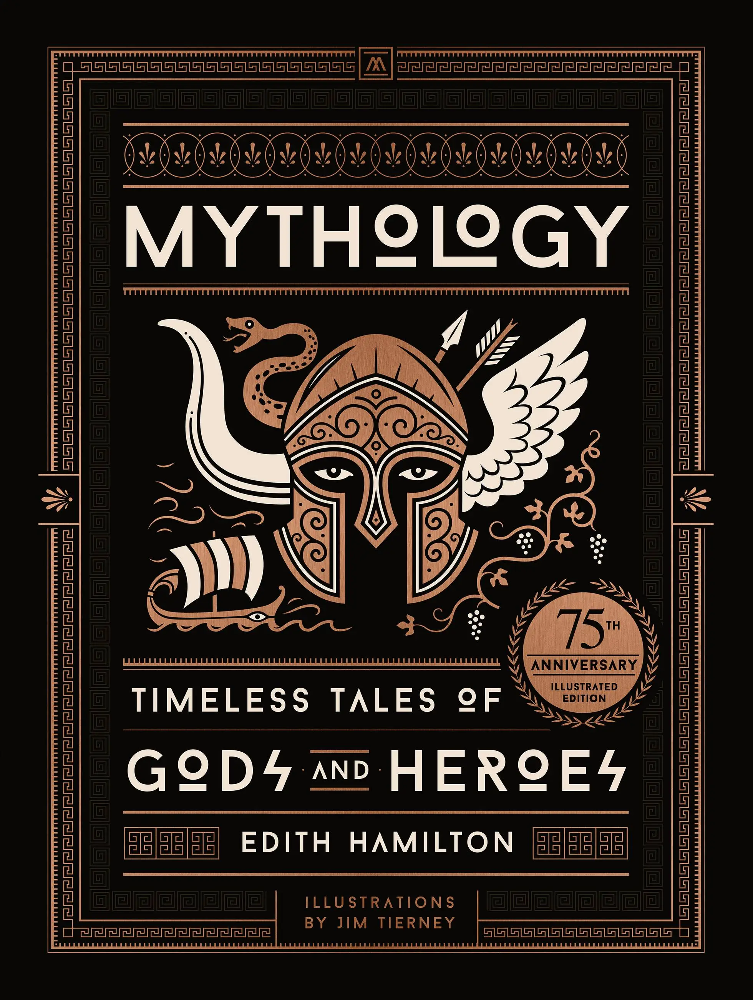
Mythology, Edith Hamilton, finished, Hachette Book Group
I had a nice second-hand Bullfinch's Mythology in my 20s, and never read Edith Hamilton for school (how). So, this was my first brush with this classic. Verdict? Essential.
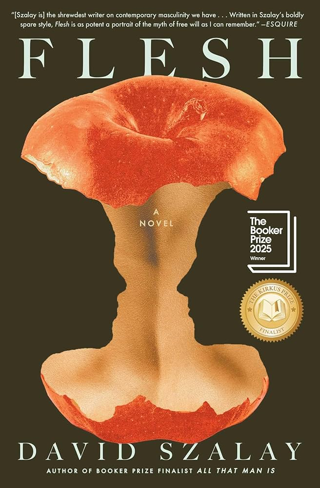
Flesh, David Szalay, finished 5/26/26, Simon & Schuster
A serious book I enjoyed and admired. That being said, I liked imagining it was Thursday Murder Club fan fic, and a (Hungarian) Bogdan's backstory.

Yesteryear, Caro Claire Burke, finished 5/23/26, Penguin Random House
Quick, with a twist in the stripe of "Gone Girl." It looks like, from Reddit, Caro Claire Burke's podcast fans wanted more nuance. The religious and cultural aspects did read like fable, but seemed appropriate for the genre of thriller?
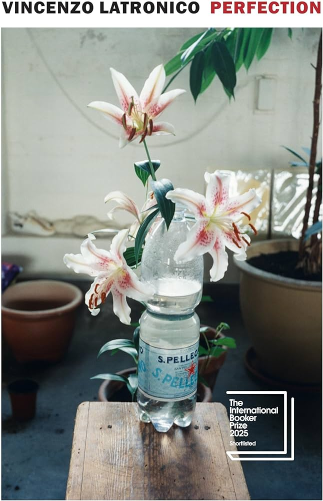
Perfection, Vincenzo Latronico, translated by Sophie Hughes, finished 5/17/26, Penguin Random House
The capsule history of a couple in young, transient Berlin. I feel a similar nostalgia for New York, a specfic combo of folks, the decade, whatever we were chasing. Also, grateful for my own partner, who hasn't rippled away on the stream.
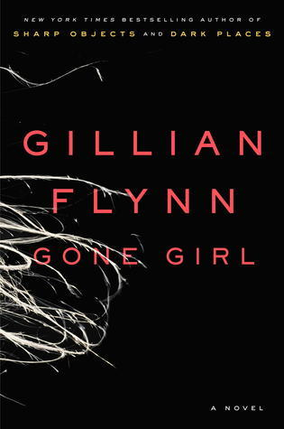
Gone Girl, Gillian Flynn, finished 5/5/26, Penguin Random House
A surprising thriller.
My wife: "Don't get any ideas."
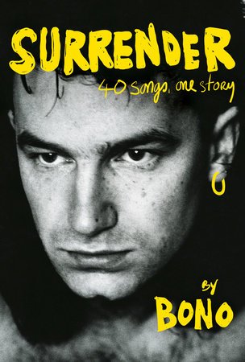
Surrender, Bono, finished 4/16/26, Penguin Random House
So much Bono! I listened to the (very good) audio book of 20 hours of Bono.

All Fours, Miranda July, finished 4/8/26, Allen & Unwin
Catherine O'Hara died, and Netflix offered all the Christopher Guest movies. So, I envisioned the protagonist as Parker Posey's go-to CG character and—it works. Unapologetic, opinionated, funny. I told a friend it starts zany and gets substantial. "Same," she said.
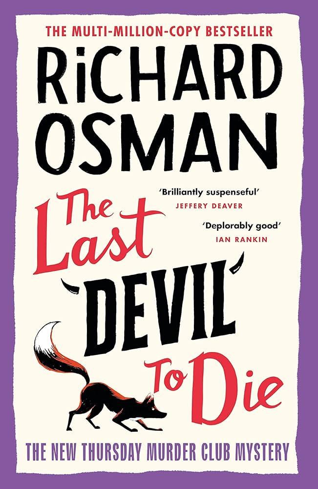
The Last Devil to Die, Richard Osman, finished 3-31-2026, Penguin Random House
Thursday Murder-solving that touches on longtime love and loss. This will probably be the very best of these.
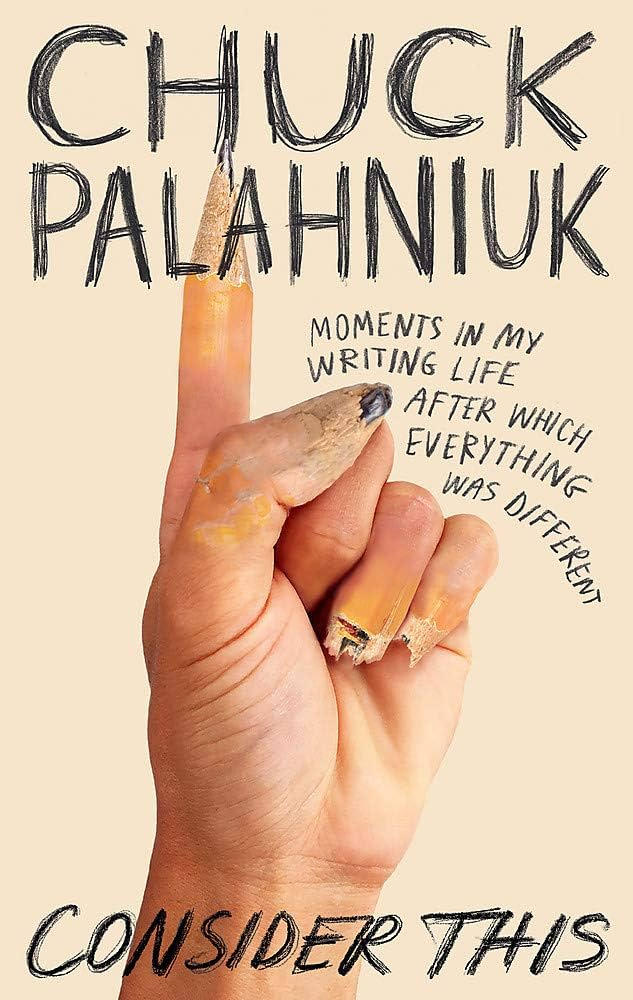
Consider This, Chuck Palahniuk, finished 3-10-26, Hachette Book Group
Concrete, actionable, and only 10% "things you can't unread" that you already love and expect from Chuck Palahniuk (made extra memorable by great writing).
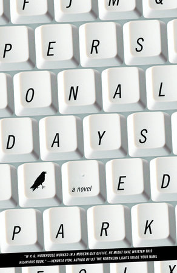
Personal Days, Ed Park, finished 2-20-26, Penguin Random House
The first half had the verve of an extended short humor piece about office culture. Heck, yeah! The second half was, for real, one long sentence that stretched for decades. Not as great.
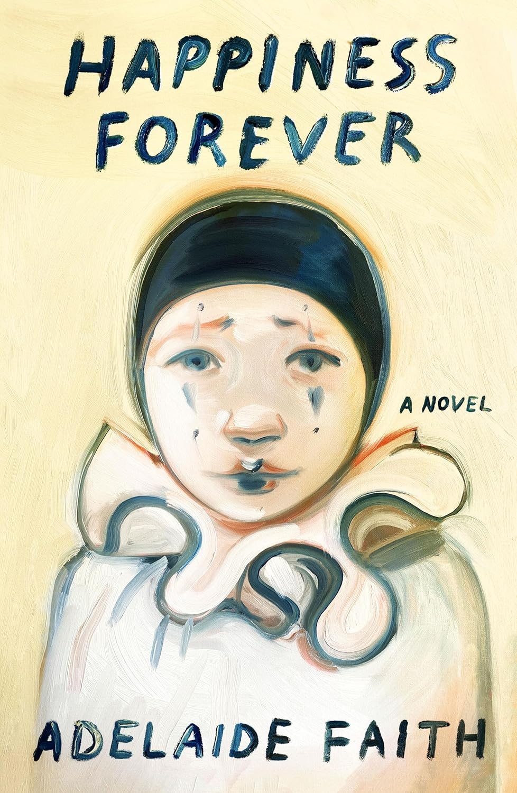
Happiness Forever, Adelaide Faith, finished 2-10-26, Farrar, Straus and Giroux
Thoughtful with beautiful ideas, but not a "complete refreshment and uplift of energy" as per the description. Reading the 256 pages may have been better. Listening to 30 min sections at the gym for a week felt like being in someone else's therapy session forever.
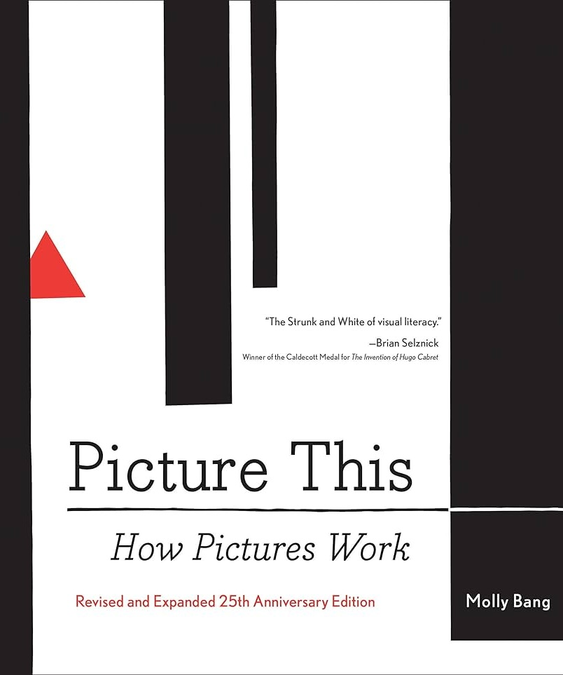
Picture This: How Pictures Work, Molly Bang, finished 2-5-26, Hardie Grant
Emotions associated with shapes and their arrangement. Visual composition for everyone. "We know these pictures can't do us any more harm or make us any safer than a blank sheet of paper can, but we feel differently looking at different pictures."
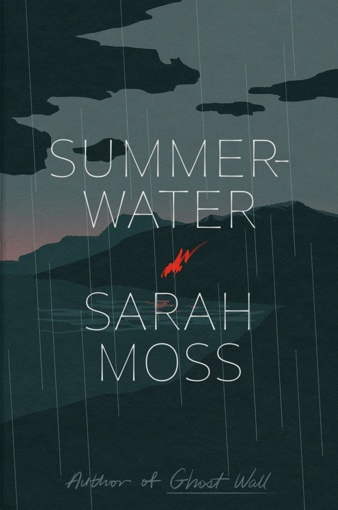
Summerwater, Sarah Moss, finished 2-4-26, Farrar, Straus and Giroux.
I commented, on an IG friend's watercolor of the Highlands, that I felt like I'd been there all week. "Is (Summerwater) a good read?" she asked. Me, "It'll make you a nervous wreck for every character, but it's only 144 pages, so it's worth it." "Sounds relaxing" she wrote, crying emoji.
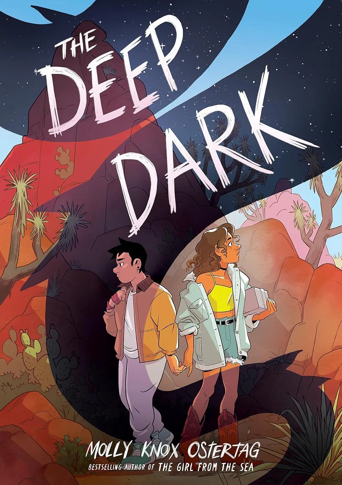
The Deep Dark, Lee Knox Ostertag, finished 1-26-26, Scholastic.
A YA horror metaphor for coming out, companionship, and life itself? Exactly. A visually and emotionally beautiful novel.
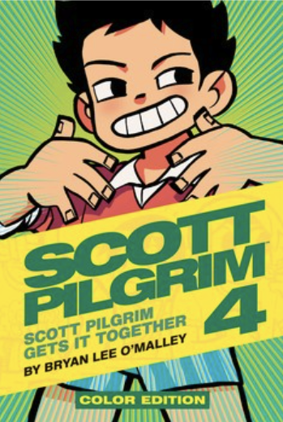
Scott Pilgrim Vol. 4, Bryan Lee O'Malley, finished 1-25-26, Oni Press, Simon & Schuster.
Hell, yes, obsessed with the world of Scott Pilgrim. Small jokes (WRISTBANDS) that bisect like antique katanas. POWER OF LOVE, Heart +3, 4ever.
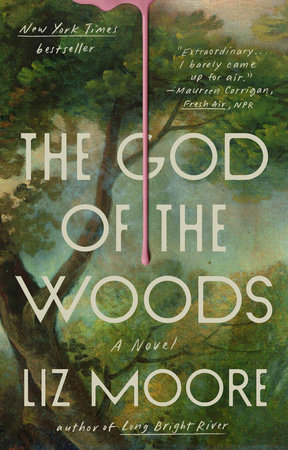
The God of the Woods, Liz Moore, finished 1-24-26, Penguin Random House.
Don't even look at the cover if you don't have 24 hours to start and finish it (I'm a slow reader). Makes me miss the mountains, and glad we finally got to the Adirondacks (and out again, alive).
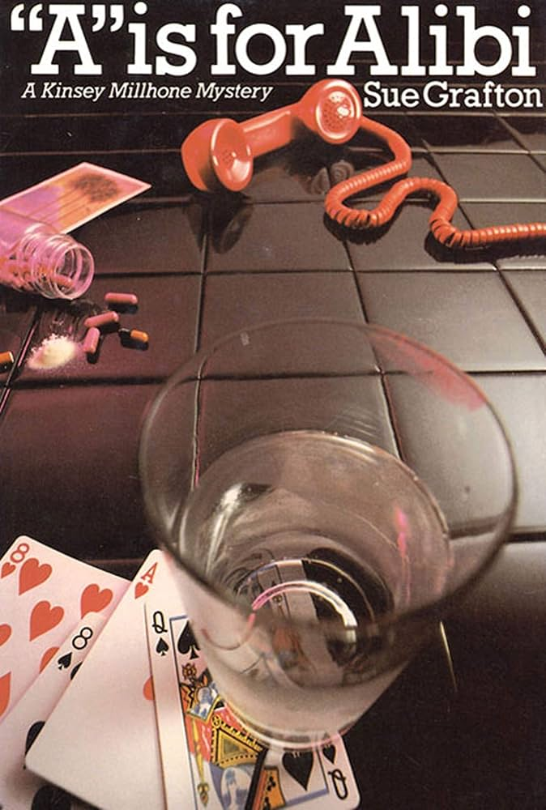
A is for Alibi, Sue Grafton, finished 1-22-26, Wikipedia.
A time capsule packed in a shining, smoking 9mm shell casing. Holy damn, the funny lines. Thank goodness they had shoulder pads in 1982, to sheild every head thrown back in smouldering glee.
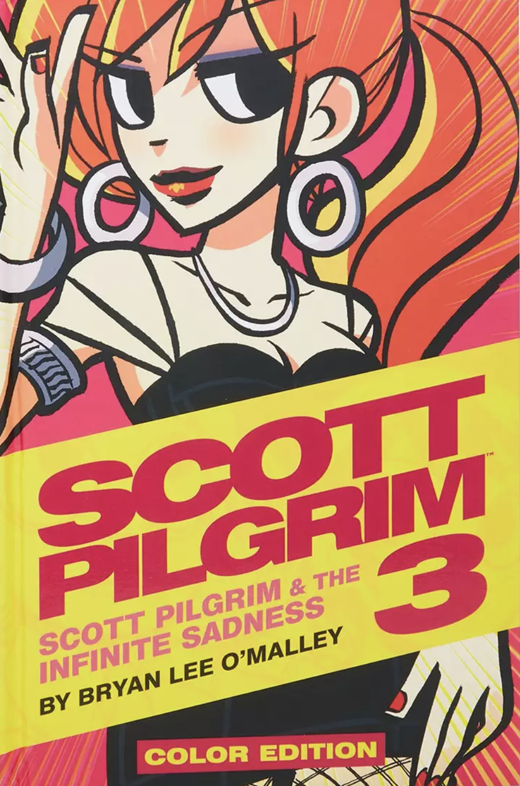
Scott Pilgrim Vol. 3, Bryan Lee O'Malley, finished 1-21-26, Oni Press.
Weirdly obsessed with the world of Scott Pilgrim. And the little face on Ramona's hammer! In your heart, you remember.
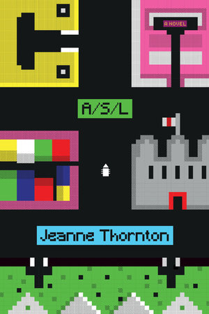
ASL, Jeanne Thornton, finished 1-20-26, Penguin Random House.
Despite being part of the LGBTQ, I've never read a novel written from the POV of trans women. For my first to be *this* epic, much gratitude. Also, appreciation for how art and formative friendships are depicted as holy and mystic, my own first, truest religion.